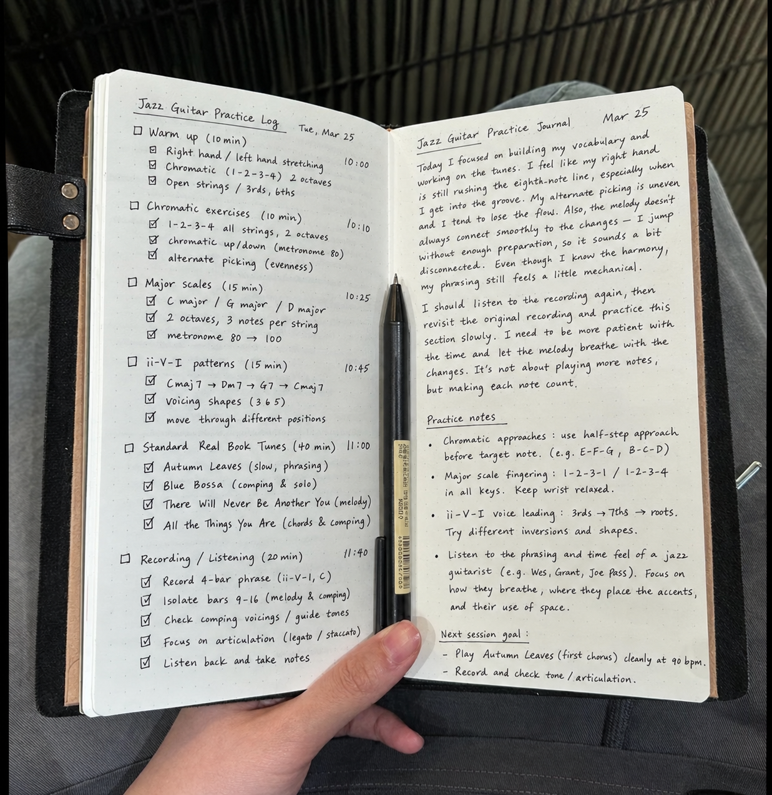

ENOCH MUSIC ACADEMY
ENOCH NOTE — PRACTICE LOG

Practice Log
어제 뭘 연습했는지,
기억나세요?
입시생이 연습일지를 꼭 써야 하는 이유
연습일지
01 / 07
사진: 연습일지
ENOCH MUSIC ACADEMY
ENOCH NOTE — PRACTICE LOG
Why · 3 Reasons
연습은 사라지고,
기록은 남습니다
01
어제를 기억하게 돼요
무엇이 안 됐는지, 하루만 지나도 흐려지거든요. 적어 두면 오늘 어디서 시작할지 보입니다.
02
나만의 방법이 쌓여요
시도한 것과 그 결과가 남으면, 그게 곧 나에게 맞는 연습법이 됩니다.
03
고민이 생겨요
쓰려면 생각해야 하고, 생각해야 다음 연습이 보여요.
연습일지
02 / 07
ENOCH MUSIC ACADEMY
ENOCH NOTE — PRACTICE LOG
Template
이 네 줄이면,
충분해요
DATE ____ / ____
TIME ____ MIN
연습 전
① 오늘의 목표
— 지금 가장 안 되는 한 곳은?
연습 후
② 방금 연습한 것
③ 잘된 것 · 안 된 것
④ 다음에 할 것
연습일지
03 / 07
ENOCH MUSIC ACADEMY
BEFORE · AFTER
Same Day, Two Logs
"연습함"은,
일지가 아닙니다
그냥 쓴 일지
오늘 3시간 연습함. 잘 안 됨.
잘 쓴 일지
10 / 16 · 90 MIN
B파트 8마디, 템포
70 → 80
마지막 두 마디가 흔들림
내일은
그 두 마디부터, 80으로
연습일지
04 / 07
ENOCH MUSIC ACADEMY
ENOCH NOTE — PRACTICE LOG
One Week · Same 8 Bars
기록이 쌓이면,
나아진 게 보입니다
BPM
B파트 8마디, 일주일 동안 적은 템포
70
월
72
화
75
수
75
목
80
금
82
토
85
일
어제보다 나아진 게 눈에 보이면,
오늘도 하게 되거든요.
연습일지
05 / 07
ENOCH MUSIC ACADEMY
ENOCH NOTE — PRACTICE LOG
Goal Setting
목표는,
거꾸로 세웁니다
Long Term
실기 시험일
시험장에서 연주
↓
This Month
이번 달
입시곡
즉흥연주
청음
화성학
↓
Today
오늘
30분 단위로, 무엇을 어떻게
연습일지
06 / 07
ENOCH MUSIC ACADEMY
THE ENOCH WAY
ENOCH
어제의 연습이,
오늘의 기준이 됩니다.
진도보다 이해를 먼저 봅니다.
시험장에서도 연습한 만큼 연주할 수 있도록,
주기적으로 모의고사를 진행합니다.
에녹실용음악학원 시흥점
경기도 시흥시 은행로 157 2층
010 3949 3666
Vocal · Guitar · Drum · Bass · Piano · MIDI · 작곡
연습일지
07 / 07